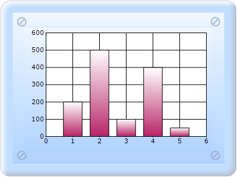
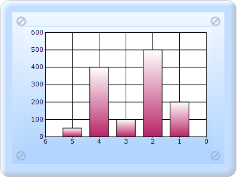
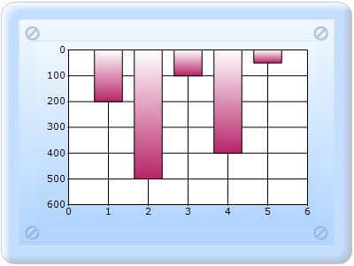

Essential Chart provides support for inverting the values in an axis. Data on an inverted axis is plotted in the opposite direction, top to bottom for the y-axis and right to left for the x-axis. To enable this behavior, set the ChartAxis.Inversed to true.
|
Chart Axis Property |
Description |
|
Inversed |
Indicates whether the axis should be reversed. |

Figure 255: Column chart not inverted

Figure 256: Column chart Inverted X Axis

Figure 257: Column chart Inverted Y Axis
Inverted Axis contained chart can be created in two ways:
· Builder
· ChartModel
 Builder
Builder